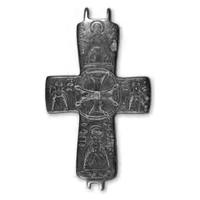

Catalog › CE-0450 · SYR2012-27
Valvă de encolpion (revers), cat. 27, NMIU Kiev
sec. XI (1001–1100) · loc necunoscut · Muzeul Național de Istorie a Ucrainei (НМИУ), Kiev; colecția „siriană” B. I. și V. N. Hanenko, inv. в 4626/288 (4101)
single valve of a reliquary cross, altul; c. XI (1001–1100); find spot unknown; kept at Muzeul Național de Istorie a Ucrainei (НМИУ), Kiev; colecția „siriană” B. I. și V. N. Hanenko.


Identificare
- Categorie
- Valvă izolată
- Material
- Altul
- Tehnică
- Gravare (incizie)
- Dimensiuni
- Î 68 × L 44 × Gr 4 mm
Iconografie
- Revers
- Sfinți militari; Sf. Gheorghe; Sf. Ioan; Sf. Petru
- Descriere revers
- Compoziție în cinci părți: o cruce în cerc la centru și, pe capete, patru sfinți în bust, anume sfinții mari mucenici Gheorghe și Teodor și apostolii Ioan și Petru. Crucea înscrisă în cerc are capetele brusc evazate, cu margini concave și „lacrimi” în colțuri, și este decorată cu hașuri. Sfinții (atât cei militari, cât și apostolii) sunt de același tip, schematici, fără trăsături iconografice distinctive; diferă doar ornamentația veșmintelor (aceeași la Petru și Ioan, ușor diferită la Gheorghe și Teodor), din triunghiuri în direcții diferite, linii paralele și hașuri. Imagini și inscripții incizate nu foarte adânc, puțin șterse pe capete. Inscripții pe două rânduri lângă fiecare sfânt.
- Inscripții
- sus: ГЄOГIHC [O]AГIOC; jos: ΘЄOΔO[P] OAГIO[C]; pe IateraIe: [IO] A NIC și POC [П] ЄT
- Limba
- Greacă
Datare și atribuire
- Datare
- sec. XI (1001–1100)
- Tipologie
- cruce în cerc și patru sfinți în bust pe brațe
Descoperire
- Context
- Colecție (fără context)
- Coordonate
- 50.4536° N, 30.5164° E
- Precizia locului
- Loc de păstrare (loc de descoperire incert)
Păstrare și referințe
- Colecție
- Muzeul Național de Istorie a Ucrainei (НМИУ), Kiev; colecția „siriană” B. I. și V. N. Hanenko
- Nr. inventar
- в 4626/288 (4101)
- Bibliografie
- A. A. Пескова, Л. В. Строкова, Христианские древности Византии в «Сирийской коллекции» Б. И. и В. Н. Ханенко, Sankt-Petersburg–Kiev, 2012, 225 p. [Peskova, Strokova 2012], p. 108, cat. nr. 27, ilustrația (fotografie și desen) de la p. 108.
- Figura
- ilustrația la cat. nr. 27
- Planșe
- Peskova, Strokova 2012, p. 108
- Observații
- Valva posterioară a unei cruci-relicvar cu capete ușor evazate, cu pereți subțiri; lăcaș adânc, neted; urechile de jos parțial rupte. Autoarele indică drept apropiate o valvă de argint de la Vențan (Bulgaria, reg. Varna) și valve de bronz de la Uman și din Muzeul Național Maghiar; Pitarakis cuprinde încă 9 cruci cu compoziție asemănătoare. Dimensiuni în sursă (în paranteză, înălțimea cu urechile): 6,8 (7,65)×4,4 cm; grosime 0,4 cm. Vechiul număr de inventar al Muzeului de Artă Hanenko (1925) este cel din paranteză. Album Hanenko, vol. III (needitat): tabla XLIII, nr. 441. Atribuirea autoarelor: Orientul Apropiat, sec. XI. Locul descoperirii nu este dat în sursă. Material în sursă: aliaj de cupru. Locul descoperirii nu e cunoscut cu precizie; punctul de pe hartă marchează locul de păstrare (Muzeul Național de Istorie a Ucrainei), nu locul descoperirii. Coordonate: nu sunt date în sursă.
Citare: Corpus Encolpiorum, CE-0450, Valvă de encolpion (revers), cat. 27, NMIU Kiev, https://vitaliejosanu1979-ux.github.io/primul-meu-proiect/piese/SYR2012-27/ (accesat 2026-10-17).